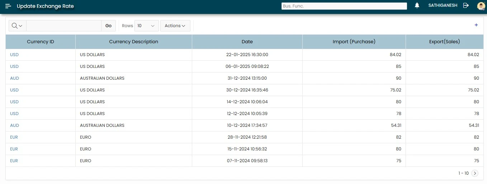
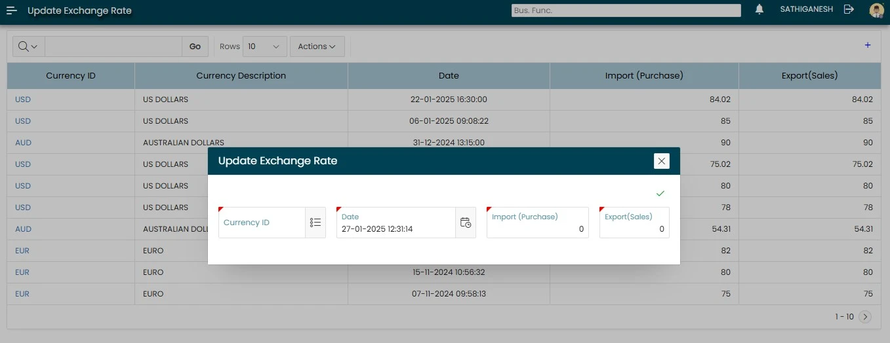

<div data-category="Financials" data-title="Update Ex. Rates" data-updated="December 01, 2025" data-contributors="RoadmapIT" data-breadcrumb="Home,Financials,Update Ex. Rates">
  <div class="page-content">
    <p>Exchange rates are the values of one currency in terms of another currency. Exchange rates are determined by the supply and demand of currencies in the foreign exchange market, as well as by other factors such as interest rates, inflation, trade, and political stability. Exchange rates affect the prices of goods and services that are traded across borders, as well as the value of foreign investments and assets.</p>
    <p>This Screen is used to Update the Exchange rate.</p>
    <h5>Navigation path:</h5>
    <p class="fs-6">Financials \ Transactions \ Ex.Rates \ Update Ex. Rates</p>
    
    <ul style="list-style-type: none; align-content: center">
      <li class="mouse-icon">
        Click
        <i class="bi bi-plus text-primary fs-4 mx-2"></i>
        to add a new Exchange rate
      </li>
    </ul>
    
    <ul style="list-style-type: none; align-content: center">
      <li class="mouse-icon">Enter Currency ID, Date, Import (Purchase) Exchange rate and Export (Sales) Exchange rate.</li>
      <li class="mouse-icon">
        Click
        <i class="bi bi-check-lg fs-4 text-success mx-2"></i>
        to Save.
      </li>
    </ul>
    <h2>Supplier Documents – General</h2>
    <ul style="list-style-type: none; align-content: center">
      <li class="arrow-icon">The invoice will be received from the Purchase Department.</li>
      <li class="arrow-icon">Those Invoices will be registered in this Screen.</li>
      <li class="arrow-icon">Partial Invoice can also be created if needed.</li>
      <li class="arrow-icon">The Invoice can be created for the Several Types of Receipt.</li>
      <ol class="ms-md-4 ms-2 mt-2">
        <li class="ps-0" style="display: list-item; list-style-type: circle">GRN(Purchase)</li>
        <li class="ps-0" style="display: list-item; list-style-type: circle">GRN (Sub contract)</li>
        <li class="ps-0" style="display: list-item; list-style-type: circle">GRN (Stock Transfer)</li>
        <li class="ps-0" style="display: list-item; list-style-type: circle">Landed Cost</li>
        <li class="ps-0" style="display: list-item; list-style-type: circle">Purchase Order</li>
        <li class="ps-0" style="display: list-item; list-style-type: circle">Expenses</li>
      </ol>
    </ul>
  </div>
</div>
